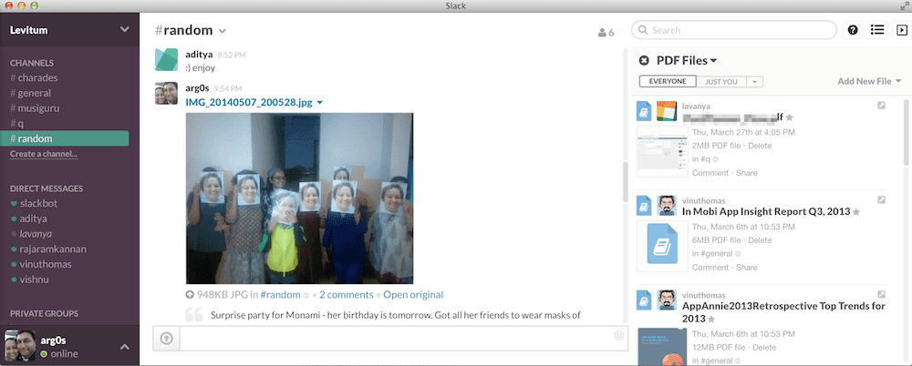
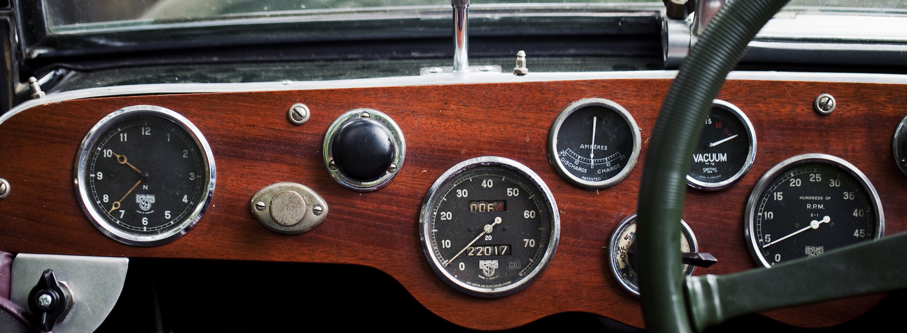
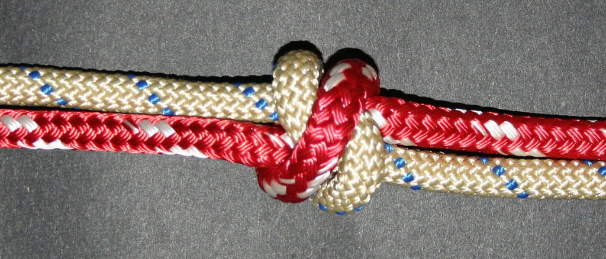

Running Effective Meetings At Your Startup
Contents
At Levitum, we are currently experimenting with a clean, new approach to how we’re running meetings during the week. This post shares the thought process behind the changes we’ve made as we’re growing and balancing new priorities. We’re hoping this will help us be more efficient, promote collaboration, and ensure we are looking out for the right things.

The Grease
While often viewed as a necessary evil in most startups, meetings provide connective communication grease.
Meetings. While often viewed as a necessary evil in most startups, they provide connective communication grease. Grease that helps information flow, camaradarie to grow, and keeps your startup running like a well oiled machine. But invariably, too much meetings can be a bad thing. Developers get particularly restless when they end up spending too much time in status meetings. Strategy meetings can often spin into endless self aggrandizing discussions. How do you know when you’ve got the right mix and balance of meetings?
What makes an effective meeting
Running effective meetings really boils down to three things1:
- They achieve the meeting’s objective.
- They take up a minimum amount of time.
- They leave participants feeling that a sensible process has been followed.
Establish the purpose
It’s also important to decide upon what the key purposes2 your meetings are for:
- Communication – share new initiatives, company victories and upcoming challenges
- Consolidation – unite the team around a common sense of purpose and formally onboard new team members
- Confirmation – highlight employee accomplishments which reinforce the company’s values and culture
- Motivation – excite employees and describe how the company will win, without ignoring reality or attempting to delude them
Invite less people
Invite less people. Or at least as few people as you really need to.
The honest truth about this is, we invite too many people all the time. And we attend several meetings where don’t add much value. If you’ve got people who sit through your meetings without offering any new perspective or ideas, their attendance was likely optional in the first place.
If you’ve got people who sit through your meetings without offering any new perspective or ideas, their attendance was likely optional in the first place.
I don’t doubt that they may have required the context and thought process behind the discussion. But, that may have been better served by providing them a separate 10 minute summary instead of having them sit through an hour long meeting. And this is not about who is smart or who is not - everyone’s got a role to play and a job to get done at the end of the day.
Use the best tools

In the context of meetings, it’s important to also cover off collaboration tools. I’ve written about collaboration tools every startup should consider3, but I’ll call out some of the newer ones that are arrived since then.
While you may be able to get by with with Skype or other similar general consumer chat apps, most startups I know are using either Campfire, Hipchat or Slack. In our case, we’ve made Slack the primary. I’ve literally gone through weeks without having had to have exchanged emails with my colleagues.
These tools are particularly effective for distributed teams (we’re in 3 different cities), and help keep everyone on the same page. A quick live conversation is just a click away.
Keep conversations effective
And here’s a few tips from Sean Blanda4 on keeping the conversations as useful as possible.
- There is no judging in brainstorming. Focus on capturing ideas before filtering and critiquing them.
- Bring solutions, not problems. Solutioning in the middle of a meeting wastes precious communication time. If you can’t bring proposed solutions to the table, save it for next time or bring it up in private conversations.
- Review “homework” from the last meeting. Not only does it remind participants what happened last week, it holds attendees accountable.
How We Run Meetings Through The Week
Earlier, we used to mostly operate off a daily standup at 9AM. This used to mostly work ok - we’d just follow up and set up breakout meetings as and when needed. But increasingly, the meetings used to stretch out for an hour or so, often meandering through updates and discussions that weren’t always relevant. Plus, there were certain topics that we ought to have been covering off that simply weren’t surfacing.
We’re trying out a new meeting structure for the week. Every day, the meetings start at 9AM over Google Hangout, and run for half hour to an hour. There are also other meetings not listed here for breakout discussions on technical or marketing activities.
Our Schedule
Monday - The Sunny Beginning
- Discuss how last week went (brief)
- Discuss plan for the week
The objective of this meeting is to lay out the plan for the week ahead. We’ve been using LeanKit extensively, and use it to track everything. We try to get LeanKit up to date coming in to the meeting so that the rough plan is in place and we need to sync up just to ensure we have a shared context.
Tuesday - The Compass
- Are we headed in the right direction?
This is a slightly broader discussion about whether we are on track towards the original goal. While we could have considered moving this to a fortnightly or monthly discussion, it’s important enough since we’re learning a lot rapidly. This gives us a weekly checkpoint to consider whether we need to pivot based on our learnings, or whether we are on course.
Wednesday - The Caliper

- What are some of the things we are doing well
- What are things we could be doing better
- Are there things we aren’t doing that we should be?
We’re focused on just 2-3 metrics at this point. They are around acquisition, activation, and retention. In certain areas such as customer development, we currently just track the number of conversations we’ve had.
Thursday - The Knot

- Learn a new thing from each other
One of the things that has always amazed me about the Levitum team is the amount of talent and knowledge everyone has on a wide range of subjects. Often enough, the day to day routine of our work doesn’t let us explore this as much as we’d like. And what better way to bring a team together than just share your knowledge and passion with each other.
And what better way to bring a team together than just share your knowledge and passion with each other.
We’re hoping to cover off a wide range of topics - technology, business, social media, sports, photography, music and more. The goal of these sessions is to keep things informal, and not need a lot of prep.
In the interest of sharing this with everyone else who are interested, we plan open this out to the public. So, if you don’t mind ad-hoc learning without a set agenda or formal structure, join us on our weekly Knot Hangout on-air*.
Friday - The Truth
- What we accomplished this week
- What have we learnt
- Demo/Show/Tell
The last day of the week is a show and tell, focused on a quick update on what got accomplished during the period and what our learnings were. This would typically include product demos, code walkthroughs, and general show & tell sessions.
If you are at a startup, how do you structure your meetings? I’d love to hear what you do, and see if we can learn from your experiences. Chime in via the comments, or drop me a note on Twitter